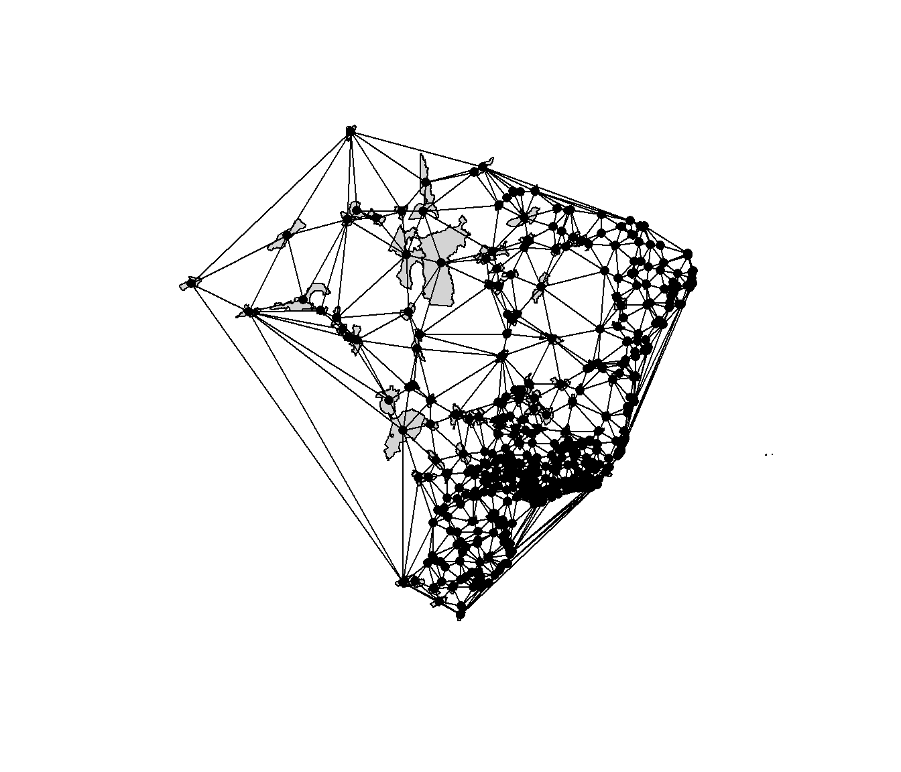
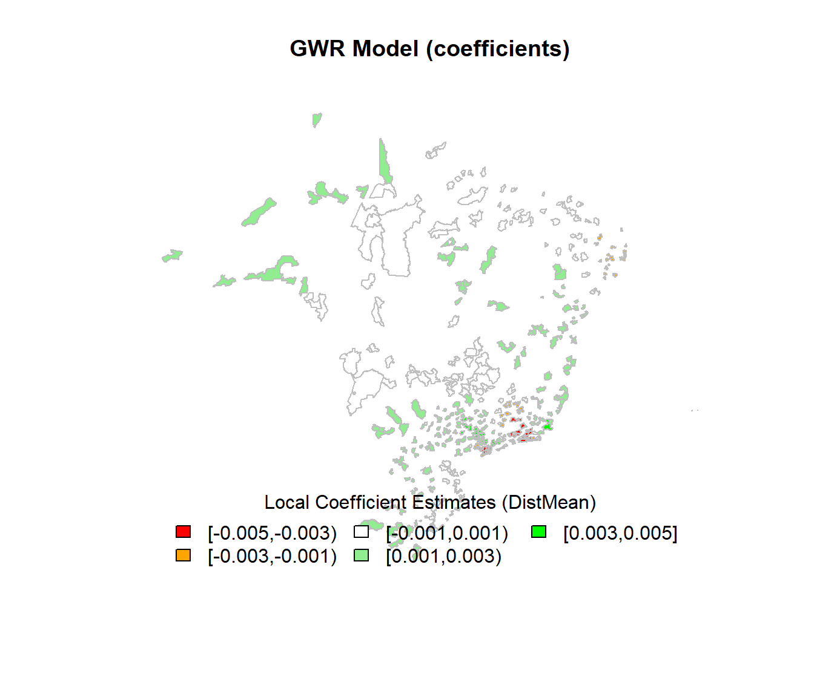
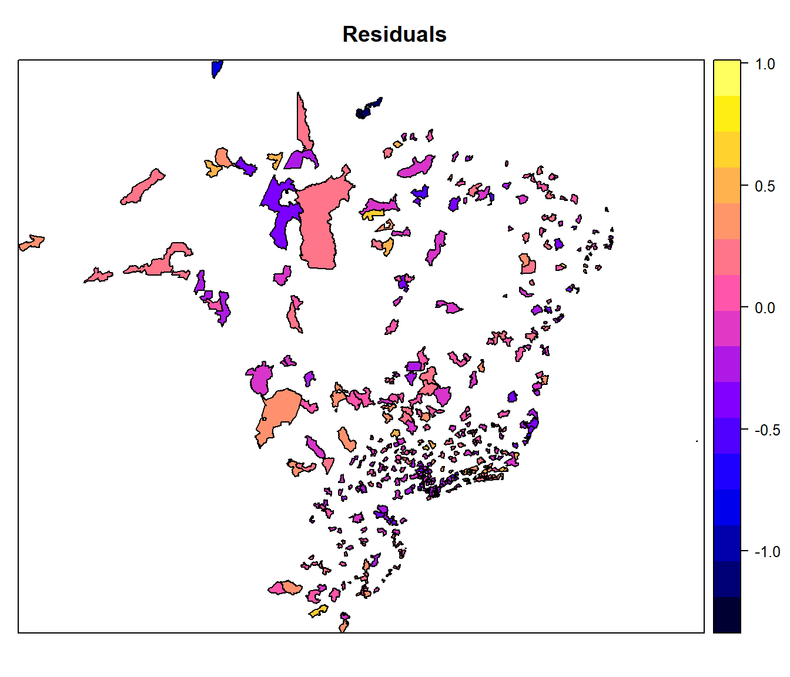
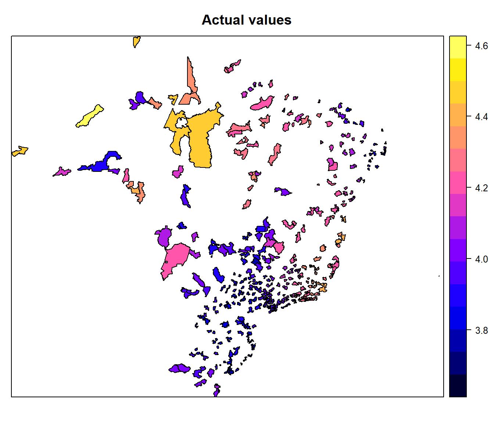
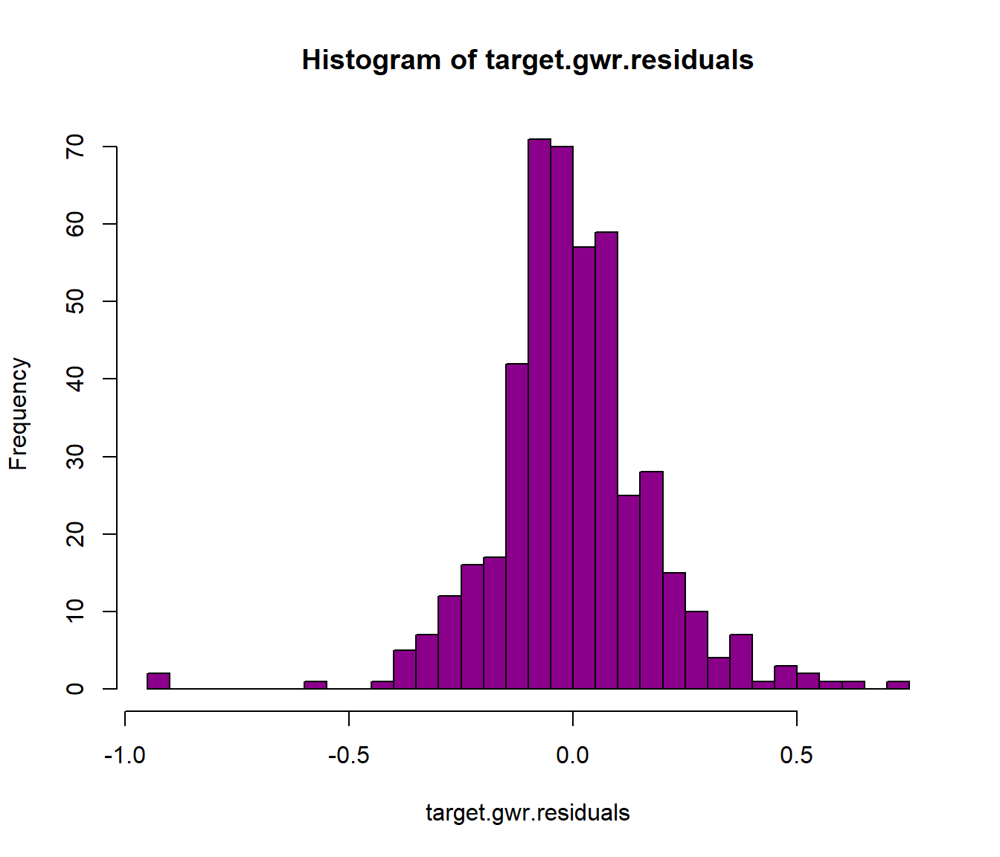

Aplicando os modelos SAR e GWR
Junho de 2020
1 Carregamento do shapefile, preparação e análises iniciais
O primeiro passo é o carregamento do shapefile, previamente preparado nas etapas anteriores, para iniciarmos uma análise iniciai quanto as variáveis.
dataProcessedDirectory <- "./data/processed/"
shapefile_to_read <- paste(dataProcessedDirectory,
"gas_prices_hist",
sep = "")
target <- readOGR(shapefile_to_read, encoding="UTF-8")## OGR data source with driver: ESRI Shapefile
## Source: "D:\GitHub\Spatial-Statistics-Applications\data\processed\gas_prices_hist", layer: "gas_prices_hist"
## with 458 features
## It has 42 fieldsdatatable(data = target@data[,c("CodIBGE", "Regiao", "Estado", "Cidade", "NmPostPesq", "PcMedRev")],
style = 'bootstrap',
options = list(pageLength = 10,autoWidth = TRUE))1.1 Variáveis presentes no dataset
Abaixo, vemos uma lista das variáveis presente no dataset do shapefile analisado.
1.2 Calculando os centróides e a matrix de vizinhança
Em seguida, obtém-se os centróides do shapefile para gerar a matrix de vizinhança dos polígonos espaciais e polígonos adjacentes através da biblioteca spdep usando a primeira ordem. A biblioteca bamlss será usada para gerar a matrix de vizinhança, baseada em um k = 3 . O plot mostra o resultado desta configuração inicial.
xy <- coordinates(target)
ap <- poly2nb(target, queen = T, row.names = target$Index)
lw <- nb2listw(ap, style = "W", zero.policy = TRUE)
nm <- neighbormatrix(target, type = "boundary", k = 3)
plotneighbors(target, type = "delaunay")##
## PLEASE NOTE: The components "delsgs" and "summary" of the
## object returned by deldir() are now DATA FRAMES rather than
## matrices (as they were prior to release 0.0-18).
## See help("deldir").
##
## PLEASE NOTE: The process that deldir() uses for determining
## duplicated points has changed from that used in version
## 0.0-9 of this package (and previously). See help("deldir").
2 Aplicando os modelos
Nas etapas a seguir, serão aplicados vários modelos a fim de entendermos se existe relacionamento espacial entre as variáveis do shapefile.
2.1 Implementando o modelo espacial auto-regressivo (SAR)
Um dos modelos mais comumente utilizados para modelagem de correlação espacial é o modelo autorregressivo espacial (do inglês spatial autorregressive model), ou simplesmente modelo SAR. A ideia dos modelos SAR é utilizar a mesma ideia dos modelos AR (autorregressivos) em séries temporais, por meio da incorporação de um termo de lagentre os regressores da equação.
Na sua forma mais simples, o modelo SAR tem expressão:
\[\gamma = \rho W \gamma + \epsilon\] Onde \(\gamma\) é um vetor coluna, contendo n observações na amostra para a variável resposta \(\gamma i\), o coeficiente escalar \(\rho\) corresponde ao parâmetro autorregressivo, esse parâmetro possui como interpretação o efeito médio da variável dependente relativo à vizinhança espacial na região em questão, já o termo \(\epsilon\) corresponde a um vetor coluna contendo os resíduos \(\epsilon i\) da equação. Por enquanto, assume-se que os resíduos \(\epsilon i\) são independentes e identicamente distribuídos, com distribuição normal, com média zero e variância homogênea \(\theta ^{2}\). Um dos componentes presentes em uma grande quantidade de modelos espaciais é a matriz \(W\). Esta matriz é conhecida como matriz de vizinhança, e pode ser definida de diversas formas, o que traz críticas aos modelos espaciais utilizando \(W\). Uma das formas mais comumente empregadas de definição da matriz \(W\) se dá por meio da identificação de vizinhos de primeira ordem.
target.sar.model <- lagsarlm(PcMedRev ~
DistMean +
DistDev +
DistMin +
RefinMean +
RefinDev +
RefinMin +
RefinMax +
ChgPIB +
ChgPIBCap,
data = target,
listw = lw,
zero.policy = T,
tol.solve = 1e-12)
summary(target.sar.model)##
## Call:spatialreg::lagsarlm(formula = formula, data = data, listw = listw,
## na.action = na.action, Durbin = Durbin, type = type, method = method,
## quiet = quiet, zero.policy = zero.policy, interval = interval,
## tol.solve = tol.solve, trs = trs, control = control)
##
## Residuals:
## Min 1Q Median 3Q Max
## -1.186487 -0.154093 -0.011863 0.144570 0.877210
##
## Type: lag
## Regions with no neighbours included:
## 39255 39261 39605 39187 39223 39274 39288 39322 39378 39450 39507 39510 39515 39536 39236 39424 39572 39499 39564 39155 39179 39210 39235 39280 39283 39293 39305 39315 39337 39351 39359 39360 39373 39381 39383 39399 39416 39419 39431 39451 39454 39472 39481 39540 39551 39565 39577 39594 39225 39163 39518 39150 39197 39199 39251 39275 39297 39301 39343 39358 39363 39370 39387 39404 39410 39526 39576 39604 39376 39395 39433 39570 39585 39162 39276 39493 39209 39156 39148 39212 39232 39248 39441 39606 39169 39316 39149 39186 39189 39191 39324 39466 39483 39508 39448 39462 39469 39240 39271 39344 39385 39486 39554 39228 39418 39233 39453 39557 39176 39180 39203 39246 39300 39379 39501 39505 39548 39171 39438 39329 39375 39152 39194 39291 39327 39328 39356 39517 39546 39549 39587 39475 39484 39204 39308 39238 39256 39298 39405 39445 39452 39581 39265 39444 39516 39583 39311 39296 39397 39447 39563 39181 39365 39480
## Coefficients: (asymptotic standard errors)
## Estimate Std. Error z value Pr(>|z|)
## (Intercept) 3.8841e+00 1.1889e-01 32.6686 < 2.2e-16
## DistMean 9.4289e-04 2.6632e-04 3.5404 0.0003995
## DistDev -2.6774e-03 4.8934e-04 -5.4715 4.463e-08
## DistMin -8.2898e-04 2.9761e-04 -2.7854 0.0053455
## RefinMean -2.3316e-04 7.3625e-05 -3.1668 0.0015411
## RefinDev -1.8349e-03 1.6158e-04 -11.3561 < 2.2e-16
## RefinMin -2.8391e-04 7.5359e-05 -3.7674 0.0001650
## RefinMax 7.6570e-04 8.1385e-05 9.4083 < 2.2e-16
## ChgPIB -6.5125e+00 1.9726e+00 -3.3015 0.0009617
## ChgPIBCap 6.6688e+00 2.0050e+00 3.3260 0.0008810
##
## Rho: -0.0034761, LR test value: 0.29215, p-value: 0.58884
## Asymptotic standard error: 0.0064366
## z-value: -0.54005, p-value: 0.58916
## Wald statistic: 0.29165, p-value: 0.58916
##
## Log likelihood: -10.23669 for lag model
## ML residual variance (sigma squared): 0.061226, (sigma: 0.24744)
## Number of observations: 458
## Number of parameters estimated: 12
## AIC: 44.473, (AIC for lm: 42.766)
## LM test for residual autocorrelation
## test value: 94.639, p-value: < 2.22e-16## (Intercept) DistMean DistDev DistMin RefinMean RefinDev
## 1.188946e-01 2.663215e-04 4.893371e-04 2.976116e-04 7.362502e-05 1.615799e-04
## RefinMin RefinMax ChgPIB ChgPIBCap
## 7.535912e-05 8.138525e-05 1.972597e+00 2.005043e+00## 0 1 2 3 4
## -0.2439430051 -0.0417915717 0.0580154299 -0.0336966176 0.0869886709
## 5 6 7 8 9
## 0.3501079340 0.6476003055 0.0334518547 0.2622227744 0.2142464810
## 10 11 12 13 14
## 0.1405003404 -0.0324892342 -0.0178765032 -0.0329761575 0.3035795265
## 15 16 17 18 19
## 0.0872422246 -0.0470135743 0.1320593966 0.0735971529 0.0027284599
## 20 21 22 23 24
## 0.0323023492 0.1317336058 -0.1214952602 0.3942993154 0.1087735477
## 25 26 27 28 29
## 0.2078471703 0.2430693526 0.3629160602 0.2925378584 -0.0307913781
## 30 31 32 33 34
## -0.0131305684 -0.3118483321 -0.1067056274 0.3843696850 0.0117506012
## 35 36 37 38 39
## -0.0513512245 -0.0027048049 -0.0162762395 -0.0376253148 0.4203496135
## 40 41 42 43 44
## -0.2123045638 0.0706128594 0.2397885431 0.2394785342 0.0698302992
## 45 46 47 48 49
## -0.2345530470 -0.1006287260 0.0845329882 -0.0383303986 0.0700704527
## 50 51 52 53 54
## 0.1059067338 0.0638314886 -0.0833712996 -0.0021905979 -0.0781338995
## 55 56 57 58 59
## -0.0069107543 0.0720799178 0.1239515124 0.5744939545 0.0614225020
## 60 61 62 63 64
## 0.1710384296 -0.1160724512 -0.0267618948 0.3906316547 -0.0455533313
## 65 66 67 68 69
## 0.3110165336 0.2820184163 0.0155488304 -0.3633315078 -0.0354097078
## 70 71 72 73 74
## 0.1612235734 0.1870978027 -0.0276752654 -0.0962006531 0.0932110927
## 75 76 77 78 79
## -0.1512579065 -0.0384870892 0.2226570497 0.2482363633 0.1347553615
## 80 81 82 83 84
## 0.2387027882 -0.0059479365 0.4506131564 0.0801441871 0.2879630222
## 85 86 87 88 89
## 0.2964102011 0.2681728285 0.2111446443 -0.0120281957 0.6622188142
## 90 91 92 93 94
## -0.1290934326 -0.3401465312 -0.1924658633 0.1116620996 -0.0328872571
## 95 96 97 98 99
## -0.0155224646 0.1673753787 0.2209815312 -0.0059840121 0.2761450171
## 100 101 102 103 104
## -0.3174629427 -0.3475050666 -0.6023603498 -0.2128432612 -0.2504018362
## 105 106 107 108 109
## -0.3858339895 -0.2500967801 -0.5093526893 -0.4444412509 -0.5367533394
## 110 111 112 113 114
## 0.7817101770 0.2489905752 0.4756085716 0.3033285346 0.2512493868
## 115 116 117 118 119
## 0.5984158312 -0.0558296491 0.1445986689 0.2577828248 0.4483570642
## 120 121 122 123 124
## 0.1444851909 0.4680198166 0.2353590944 0.0280123667 0.3213757362
## 125 126 127 128 129
## -0.0111437755 0.0512417685 0.1994574919 0.4815709389 0.4418888649
## 130 131 132 133 134
## 0.3482333731 0.2405039429 -0.2971453875 0.4623744709 0.1679821986
## 135 136 137 138 139
## 0.1668976679 0.3399644116 0.4256810108 0.4128278114 0.6303559889
## 140 141 142 143 144
## 0.3418946590 0.3530223174 -0.0091811404 -0.1958044563 -0.1025330531
## 145 146 147 148 149
## -0.1244913171 0.1584394911 -0.3253915561 0.1225490148 -0.1159199405
## 150 151 152 153 154
## -0.1422684766 -0.0953132248 -0.0025549807 -0.0774820277 -0.1051273661
## 155 156 157 158 159
## 0.0004174355 -0.0267598900 -0.2444959471 -0.2251574638 -0.1550373953
## 160 161 162 163 164
## 0.1772917344 -0.1894520696 -0.0663699683 -0.2509876505 -0.0489156611
## 165 166 167 168 169
## -0.3577890304 0.0920383208 -0.3410899103 -0.0373964612 0.3262588043
## 170 171 172 173 174
## -0.0096415711 -0.3336488119 0.0908053109 -0.2418440505 0.0042910420
## 175 176 177 178 179
## -0.0059146296 -0.0244157795 0.0854668931 -0.0684504895 -0.2340571007
## 180 181 182 183 184
## -0.1219048296 -0.1972458737 0.0190176960 -0.2346222007 -0.1989978688
## 185 186 187 188 189
## -0.1649139316 0.0140599234 -0.1723381994 0.0160318019 -0.0054940529
## 190 191 192 193 194
## 0.0367081594 -0.1075993682 -0.3415439368 -0.2834291435 -0.0353672281
## 195 196 197 198 199
## -0.2537401918 -0.1486164773 0.1843016785 -0.0807198642 -0.0245725478
## 200 201 202 203 204
## -0.1559872652 -0.2941581933 -0.1336713160 -0.2540746302 0.0137821879
## 205 206 207 208 209
## -0.2990319174 -0.2209498667 0.0578515003 0.0098721581 -0.2217241845
## 210 211 212 213 214
## -0.1955268960 -0.1156277566 -0.2317781868 -0.1891007747 -0.0598808113
## 215 216 217 218 219
## 0.0133090813 0.0225829424 -0.1368291309 -0.2867495249 -0.2762549575
## 220 221 222 223 224
## -0.1463273794 -0.0921103945 -0.2164545429 -0.1461930029 -0.1435081127
## 225 226 227 228 229
## -0.1455985733 -0.2480914740 -0.2522957693 0.0450609034 -0.2792122449
## 230 231 232 233 234
## -0.1881321019 -0.1425770249 -0.1742066192 0.1582423673 -0.3725412216
## 235 236 237 238 239
## -0.2081787302 -0.0628369971 0.0850688251 -0.2946449861 -0.1995538795
## 240 241 242 243 244
## -0.1730690344 -0.0624799613 -0.1041671395 -0.1863489457 0.0137446373
## 245 246 247 248 249
## -0.3130924029 0.1080429652 -0.0725423215 0.2716194858 0.1239466185
## 250 251 252 253 254
## -0.0005174790 0.1045310441 0.0576797051 0.0302311372 0.0855760507
## 255 256 257 258 259
## 0.0245525607 -0.0713315544 -0.2359834846 0.0629495349 -0.1218341518
## 260 261 262 263 264
## 0.3668247571 0.1401379565 0.1382683324 0.0914941234 0.3539490122
## 265 266 267 268 269
## 0.2003069701 0.1438771729 0.1768648476 0.0941755505 0.5472928786
## 270 271 272 273 274
## 0.1392581063 -0.0561610936 -0.0150874855 0.0559994219 -0.0085454331
## 275 276 277 278 279
## -0.0261071034 -0.0237557916 0.1766223257 0.3840472370 0.3055678422
## 280 281 282 283 284
## 0.0392200863 -0.1221512241 0.2456931516 0.1200977310 0.0313677767
## 285 286 287 288 289
## 0.0171600820 0.1155423550 -0.0697306050 0.3882109393 -0.2358702905
## 290 291 292 293 294
## 0.0946104420 0.1623177052 -0.3169133787 -0.2349362870 0.3821543628
## 295 296 297 298 299
## 0.2210242951 -0.8068460081 0.2201655370 0.1446518990 -0.3858615527
## 300 301 302 303 304
## -0.2759895271 -0.0958641710 0.0563214945 0.2277495732 0.4793059849
## 305 306 307 308 309
## -0.3887985101 -0.1210204130 0.1033787591 0.1995908832 -0.1471477354
## 310 311 312 313 314
## 0.5286592107 -0.0721059026 -0.0241629484 0.6985736253 0.2706937159
## 315 316 317 318 319
## 0.3060563240 -0.1387967148 -0.0499372928 0.0327326185 -0.4150433858
## 320 321 322 323 324
## 0.1056330811 -0.5499016153 0.0068526265 -0.1248201180 -0.4002485604
## 325 326 327 328 329
## -0.0865164142 0.2396643654 -0.3518359950 -0.0312241938 -0.1414680313
## 330 331 332 333 334
## 0.3125922203 -0.2946082504 -0.2587094174 0.0459602115 -0.0378019816
## 335 336 337 338 339
## -0.2292697503 -0.4592448173 0.0601053001 0.1073865258 -0.0198521117
## 340 341 342 343 344
## 0.0536731049 0.0778639625 0.1936606678 0.1236589723 0.1351972158
## 345 346 347 348 349
## -0.0225301387 0.0802137470 0.2727111205 0.2632276766 0.0096684989
## 350 351 352 353 354
## -0.1436463735 0.1963908698 0.0628980062 -0.1834344817 -0.2900019422
## 355 356 357 358 359
## -0.1374269093 -0.2694671664 -0.3158114938 -0.3392842822 -0.1457787338
## 360 361 362 363 364
## 0.2700092804 -0.0848755805 0.0150968578 -0.0182687196 0.0899670681
## 365 366 367 368 369
## -0.3494943488 -0.2589139706 -0.1615869743 -0.1851780007 -0.1486535621
## 370 371 372 373 374
## -0.1720815708 -0.0970486015 0.3323080806 -0.2219611854 0.2639152869
## 375 376 377 378 379
## 0.1232842139 -0.3345447547 -0.0571630912 0.3705298639 0.8772102913
## 380 381 382 383 384
## 0.1142926117 0.3545293539 0.1814848143 0.1256192837 -0.1691974301
## 385 386 387 388 389
## -0.3324518078 0.1965045056 -0.0405966346 -0.0429056287 -0.2093789769
## 390 391 392 393 394
## -0.3332807718 -0.3024966084 -0.0322985786 -0.0432070798 -0.0414431704
## 395 396 397 398 399
## 0.2838655462 -0.1087849168 0.2247650847 0.0132462193 -0.2295903823
## 400 401 402 403 404
## -0.0384324225 0.2397848562 0.0714179154 -0.0712231093 0.1992210803
## 405 406 407 408 409
## 0.0268328026 -0.2797019549 0.0151740600 0.3082666881 0.1622163746
## 410 411 412 413 414
## 0.0949484589 0.0216927091 0.1295568429 0.1970347507 0.0927836485
## 415 416 417 418 419
## 0.1411757899 -1.1166464076 -1.1864867944 -0.2219190806 -0.2747218019
## 420 421 422 423 424
## 0.0083936925 -0.0293603311 -0.0538760746 -0.0582345153 -0.0978365743
## 425 426 427 428 429
## -0.0353320521 -0.0585733293 0.0079754664 -0.1428930395 -0.2921595518
## 430 431 432 433 434
## -0.2540260993 -0.1791734916 -0.2518553069 0.2005269473 -0.5380304722
## 435 436 437 438 439
## -0.1808617278 -0.0824036710 -0.3257089458 -0.4136332729 -0.0847624414
## 440 441 442 443 444
## -0.3810293852 -0.0378792589 -0.0346170999 -0.0784628490 -0.0116974330
## 445 446 447 448 449
## -0.1289699456 -0.2320719228 -0.3748137426 0.4839310516 0.3129443371
## 450 451 452 453 454
## 0.4546398853 0.2666821972 0.1626153231 -0.2332964158 -0.1789751456
## 455 456 457
## 0.0002271501 0.2040213381 -0.2140947893target.sar.model.residuals <- target.sar.model$residuals
target.sar.model.class_fx <- classIntervals(target.sar.model.residuals,
n = 5,
style = "fixed",
fixedBreaks = c(-50,-25,-5,5,25,50),
rtimes = 1)
cols.sar <- findColours(target.sar.model.class_fx, pal)
plot(target, col = cols.sar, main = "SAR Model", border = "grey")
legend(x = "bottom", cex = 1, fill = attr(cols.sar, "palette"), bty = "n",
legend = names(attr(cols.sar, "table")), title = "Residuals from SAR Model",
ncol = 5)
##
## Moran I test under randomisation
##
## data: target.sar.model.residuals
## weights: lw n reduced by no-neighbour observations
##
##
## Moran I statistic standard deviate = 6.497, p-value = 4.098e-11
## alternative hypothesis: greater
## sample estimates:
## Moran I statistic Expectation Variance
## 0.414559389 -0.003300330 0.0041365832.2 Implementando o modelo de regressão geograficamente ponderada (GWR)
O modelo GWR é um desenvolvimento de (1) para permitir aestimação dos coeficientes locais. No modelo GRW, assume-se que as informações mais próximas do ponto de regressão têm maior probabilidade de influenciá-lo.
\[\gamma_i = \beta_0(u_i, v_i) + \sum_\kappa\beta_k (u_i, v_i) \chi_i\kappa + \varepsilon_i \] Na equação, \((u_i, v_i)\) são coordenadas do ponto \(i\) no espaço (podem sercoordenadas polares, como latitudes e longitudes, por exemplo), \(\beta_0(u_i, v_i)\) é o coeficiente local estimado para o ponto \(i\).
Tal ponderação é feita pela função Kernel espacial, que é uma função real, contínua e simétrica, cujaintegral soma um, semelhante a uma função de densidade de probabilidade. O Kernel espacial permite fazer a calibragem do modelo para \(n\) subamostras em torno do ponto de regressão \(i\), formando “janelas móveis”.
O modelo GWR assume que os coeficientes variem no espaço, sem uma explicação teórica fundamental. Essa variação pressupõe um determinismo geográfico que pode esconder a verdadeira causa da eventual instabilidade dos coeficientes locais. Esta observação pontua a necessidade de um olhar geral, considerando todas as demais análises realizadas duranto o desenvolvimento deste projeto, para dar uma dimensão mais ampla sobre as obervações que estarão presentes no relatório final (conclusão).
coords <- cbind(target$X_COORD, target$Y_COORD)
# GWR model (Geographically Weighted Regression)
target.gwr.sel <- gwr.sel(PcMedRev ~
DistMean +
DistDev +
DistMin +
RefinMean +
RefinDev +
RefinMin +
RefinMax +
ChgPIB +
ChgPIBCap,
data = target,
coords = coords,
adapt = TRUE,
method = "aic",
gweight = gwr.Gauss,
verbose = TRUE)## Bandwidth: 0.381966 AIC: -17.80954
## Bandwidth: 0.618034 AIC: 10.46157
## Bandwidth: 0.236068 AIC: -50.36029
## Bandwidth: 0.145898 AIC: -77.05281
## Bandwidth: 0.09016994 AIC: -99.79467
## Bandwidth: 0.05572809 AIC: -111.5755
## Bandwidth: 0.03444185 AIC: -97.44028
## Bandwidth: 0.06347596 AIC: -108.0164
## Bandwidth: 0.04759747 AIC: -111.9414
## Bandwidth: 0.05080047 AIC: -112.3102
## Bandwidth: 0.05097047 AIC: -112.3869
## Bandwidth: 0.05278772 AIC: -112.714
## Bandwidth: 0.05253965 AIC: -112.8435
## Bandwidth: 0.05208016 AIC: -112.8153
## Bandwidth: 0.05236414 AIC: -112.9032
## Bandwidth: 0.05232345 AIC: -112.8912
## Bandwidth: 0.05240483 AIC: -112.9126
## Bandwidth: 0.05245633 AIC: -112.8863
## Bandwidth: 0.05240483 AIC: -112.9126target.gwr.model <- gwr(PcMedRev ~
DistMean +
DistDev +
DistMin +
RefinMean +
RefinDev +
RefinMin +
RefinMax +
ChgPIB +
ChgPIBCap,
data = target,
coords = coords,
bandwidth = target.gwr.sel,
gweight = gwr.Gauss,
adapt = target.gwr.sel,
hatmatrix = TRUE)
# calculate global residual SST (SQT)
SST <- sum((target$DistMean - mean(target$DistMean)) ^ 2)
GWR_SSE <- target.gwr.model$results$rss
r2_GWR <- 1 - (GWR_SSE / SST)
r2_GWR## [1] 0.9999983# residuals
target.gwr.residuals <- target.gwr.model$SDF$gwr.e
target.gwr.residuals.classes_fx <- classIntervals(target.gwr.residuals, n = 5, style = "fixed",
fixedBreaks = c(-50,-25,-5,5,25,50),
rtimes = 1)
cols.gwr.residuals <- findColours(target.gwr.residuals.classes_fx, pal)
plot(target, col = cols.gwr.residuals, main = "GWR Model (residuals)", border = "grey")
legend(x = "bottom", cex = 1, fill = attr(cols.gwr.residuals,"palette"), bty = "n",
legend = names(attr(cols.gwr.residuals, "table")),
title = "Residuals from GWR Model", ncol = 5)
##
## Moran I test under randomisation
##
## data: target.gwr.residuals
## weights: lw n reduced by no-neighbour observations
##
##
## Moran I statistic standard deviate = 2.0933, p-value = 0.01816
## alternative hypothesis: greater
## sample estimates:
## Moran I statistic Expectation Variance
## 0.130839530 -0.003300330 0.004106295# coefficients
target.gwr.coefficients <- target.gwr.model$SDF$DistMean
target.gwr.coefficients.classes_fx <- classIntervals(target.gwr.coefficients, n = 5, style = "fixed",
fixedBreaks=c(-.005,-.003,-.001,.001,.003,.005),
rtimes = 1)
cols.gwr.coefficients <- findColours(target.gwr.coefficients.classes_fx, pal)
plot(target, col = cols.gwr.coefficients, main = "GWR Model (coefficients)", border = "grey")
legend(x = "bottom", cex = 1, fill = attr(cols.gwr.coefficients,"palette"), bty = "n",
legend = names(attr(cols.gwr.coefficients, "table")),
title = "Local Coefficient Estimates (DistMean)", ncol = 3)
##
## Moran I test under randomisation
##
## data: target.gwr.coefficients
## weights: lw n reduced by no-neighbour observations
##
##
## Moran I statistic standard deviate = 12.934, p-value < 2.2e-16
## alternative hypothesis: greater
## sample estimates:
## Moran I statistic Expectation Variance
## 0.824769068 -0.003300330 0.0040986442.3 Implementando o modelo de regressão linear multivariado stepwise
Chamamos de stepwise uma modificação da seleção forward em que cada passo todas as variáveis do modelo são previamente verificadas pelas suas estatísticas \(F\) parciais. Uma variável adicionada no modelo no passo anterior pode ser redundante para o modelo por causa do seu relacionamento com as outras variáveis e se sua estatística \(F\) parcial for menor que \(F_{out}\), ela é removida do modelo.
Procedimento:
- Iniciamos com uma variável: aquela que tiver maior correlação com a variável resposta;
- A cada passo do forward, depois de incluir uma variável, aplica-se o backward para ver se será descartada alguma variável;
- Continuamos o processo até não incluir ou excluir nenhuma variável.
Assim, a regressão Stepwise requer dois valores de corte: $ F_{in} $ e $ F_{out} $. Alguns autores preferem escolher $ F_{in}=F_{out} $ mas isso não é necessário. Se $ F_{in}F_{out} $: mais difícil remover que adicionar; se $ F_{in}F_{out} $: mais difícil adicionar que remover.
# initial exploration in PcMedRev x DistMean
pcmedrev_by_DistMean_plot <- ggplot(data = target@data,
aes(x = target$DistMean,
y = target$PcMedRev,
color = target$DistMean)) +
geom_point() +
theme(legend.position = "none") +
xlab("DistMean") +
ylab("PcMedRev")
ggMarginal(pcmedrev_by_DistMean_plot, type = "histogram")
# runing the linear model multivaluated and looking at the residuals
target.ols.model <- lm(PcMedRev ~
DistMean +
DistDev +
DistMin +
RefinMean +
RefinDev +
RefinMin +
RefinMax +
ChgPIB +
ChgPIBCap,
data = target)
summary(target.ols.model)##
## Call:
## lm(formula = PcMedRev ~ DistMean + DistDev + DistMin + RefinMean +
## RefinDev + RefinMin + RefinMax + ChgPIB + ChgPIBCap, data = target)
##
## Residuals:
## Min 1Q Median 3Q Max
## -1.19303 -0.14935 -0.01365 0.14237 0.86936
##
## Coefficients:
## Estimate Std. Error t value Pr(>|t|)
## (Intercept) 3.873e+00 1.183e-01 32.727 < 2e-16 ***
## DistMean 9.448e-04 2.693e-04 3.508 0.000497 ***
## DistDev -2.671e-03 4.948e-04 -5.397 1.1e-07 ***
## DistMin -8.126e-04 2.994e-04 -2.714 0.006914 **
## RefinMean -2.286e-04 7.396e-05 -3.091 0.002117 **
## RefinDev -1.822e-03 1.616e-04 -11.275 < 2e-16 ***
## RefinMin -2.808e-04 7.597e-05 -3.696 0.000246 ***
## RefinMax 7.599e-04 8.160e-05 9.313 < 2e-16 ***
## ChgPIB -6.657e+00 1.971e+00 -3.378 0.000794 ***
## ChgPIBCap 6.815e+00 2.003e+00 3.402 0.000728 ***
## ---
## Signif. codes: 0 '***' 0.001 '**' 0.01 '*' 0.05 '.' 0.1 ' ' 1
##
## Residual standard error: 0.2503 on 448 degrees of freedom
## Multiple R-squared: 0.3277, Adjusted R-squared: 0.3142
## F-statistic: 24.26 on 9 and 448 DF, p-value: < 2.2e-16
# runing the lm multivaluated model
target.lm.multivaluated.model <- lm(PcMedRev ~
DistMean +
DistDev +
DistMin +
RefinMean +
RefinDev +
RefinMin +
RefinMax +
ChgPIB +
ChgPIBCap,
data = target)
summary(target.lm.multivaluated.model)##
## Call:
## lm(formula = PcMedRev ~ DistMean + DistDev + DistMin + RefinMean +
## RefinDev + RefinMin + RefinMax + ChgPIB + ChgPIBCap, data = target)
##
## Residuals:
## Min 1Q Median 3Q Max
## -1.19303 -0.14935 -0.01365 0.14237 0.86936
##
## Coefficients:
## Estimate Std. Error t value Pr(>|t|)
## (Intercept) 3.873e+00 1.183e-01 32.727 < 2e-16 ***
## DistMean 9.448e-04 2.693e-04 3.508 0.000497 ***
## DistDev -2.671e-03 4.948e-04 -5.397 1.1e-07 ***
## DistMin -8.126e-04 2.994e-04 -2.714 0.006914 **
## RefinMean -2.286e-04 7.396e-05 -3.091 0.002117 **
## RefinDev -1.822e-03 1.616e-04 -11.275 < 2e-16 ***
## RefinMin -2.808e-04 7.597e-05 -3.696 0.000246 ***
## RefinMax 7.599e-04 8.160e-05 9.313 < 2e-16 ***
## ChgPIB -6.657e+00 1.971e+00 -3.378 0.000794 ***
## ChgPIBCap 6.815e+00 2.003e+00 3.402 0.000728 ***
## ---
## Signif. codes: 0 '***' 0.001 '**' 0.01 '*' 0.05 '.' 0.1 ' ' 1
##
## Residual standard error: 0.2503 on 448 degrees of freedom
## Multiple R-squared: 0.3277, Adjusted R-squared: 0.3142
## F-statistic: 24.26 on 9 and 448 DF, p-value: < 2.2e-16# performing the stepwise selection
target.sar.model.stepwise <- step(target.lm.multivaluated.model,
direction = "both",
test = "F")## Start: AIC=-1258.98
## PcMedRev ~ DistMean + DistDev + DistMin + RefinMean + RefinDev +
## RefinMin + RefinMax + ChgPIB + ChgPIBCap
##
## Df Sum of Sq RSS AIC F value Pr(>F)
## <none> 28.060 -1259.0
## - DistMin 1 0.4612 28.521 -1253.5 7.3633 0.0069136 **
## - RefinMean 1 0.5985 28.658 -1251.3 9.5559 0.0021173 **
## - ChgPIB 1 0.7147 28.774 -1249.5 11.4109 0.0007939 ***
## - ChgPIBCap 1 0.7250 28.785 -1249.3 11.5757 0.0007282 ***
## - DistMean 1 0.7708 28.830 -1248.6 12.3066 0.0004970 ***
## - RefinMin 1 0.8555 28.915 -1247.2 13.6590 0.0002463 ***
## - DistDev 1 1.8242 29.884 -1232.1 29.1258 1.102e-07 ***
## - RefinMax 1 5.4321 33.492 -1179.9 86.7293 < 2.2e-16 ***
## - RefinDev 1 7.9623 36.022 -1146.6 127.1253 < 2.2e-16 ***
## ---
## Signif. codes: 0 '***' 0.001 '**' 0.01 '*' 0.05 '.' 0.1 ' ' 1##
## Call:
## lm(formula = PcMedRev ~ DistMean + DistDev + DistMin + RefinMean +
## RefinDev + RefinMin + RefinMax + ChgPIB + ChgPIBCap, data = target)
##
## Residuals:
## Min 1Q Median 3Q Max
## -1.19303 -0.14935 -0.01365 0.14237 0.86936
##
## Coefficients:
## Estimate Std. Error t value Pr(>|t|)
## (Intercept) 3.873e+00 1.183e-01 32.727 < 2e-16 ***
## DistMean 9.448e-04 2.693e-04 3.508 0.000497 ***
## DistDev -2.671e-03 4.948e-04 -5.397 1.1e-07 ***
## DistMin -8.126e-04 2.994e-04 -2.714 0.006914 **
## RefinMean -2.286e-04 7.396e-05 -3.091 0.002117 **
## RefinDev -1.822e-03 1.616e-04 -11.275 < 2e-16 ***
## RefinMin -2.808e-04 7.597e-05 -3.696 0.000246 ***
## RefinMax 7.599e-04 8.160e-05 9.313 < 2e-16 ***
## ChgPIB -6.657e+00 1.971e+00 -3.378 0.000794 ***
## ChgPIBCap 6.815e+00 2.003e+00 3.402 0.000728 ***
## ---
## Signif. codes: 0 '***' 0.001 '**' 0.01 '*' 0.05 '.' 0.1 ' ' 1
##
## Residual standard error: 0.2503 on 448 degrees of freedom
## Multiple R-squared: 0.3277, Adjusted R-squared: 0.3142
## F-statistic: 24.26 on 9 and 448 DF, p-value: < 2.2e-16# runing the SAR model
target.lagsarlm.model <- lagsarlm(formula = PcMedRev ~
DistMean +
DistDev +
DistMin +
RefinMean +
RefinDev +
RefinMin +
RefinMax +
ChgPIB +
ChgPIBCap,
data = target,
listw = lw,
quiet = T,
zero.policy = T,
tol.solve = 1e-12)
summary(target.lagsarlm.model)##
## Call:spatialreg::lagsarlm(formula = formula, data = data, listw = listw,
## na.action = na.action, Durbin = Durbin, type = type, method = method,
## quiet = quiet, zero.policy = zero.policy, interval = interval,
## tol.solve = tol.solve, trs = trs, control = control)
##
## Residuals:
## Min 1Q Median 3Q Max
## -1.186487 -0.154093 -0.011863 0.144570 0.877210
##
## Type: lag
## Regions with no neighbours included:
## 39255 39261 39605 39187 39223 39274 39288 39322 39378 39450 39507 39510 39515 39536 39236 39424 39572 39499 39564 39155 39179 39210 39235 39280 39283 39293 39305 39315 39337 39351 39359 39360 39373 39381 39383 39399 39416 39419 39431 39451 39454 39472 39481 39540 39551 39565 39577 39594 39225 39163 39518 39150 39197 39199 39251 39275 39297 39301 39343 39358 39363 39370 39387 39404 39410 39526 39576 39604 39376 39395 39433 39570 39585 39162 39276 39493 39209 39156 39148 39212 39232 39248 39441 39606 39169 39316 39149 39186 39189 39191 39324 39466 39483 39508 39448 39462 39469 39240 39271 39344 39385 39486 39554 39228 39418 39233 39453 39557 39176 39180 39203 39246 39300 39379 39501 39505 39548 39171 39438 39329 39375 39152 39194 39291 39327 39328 39356 39517 39546 39549 39587 39475 39484 39204 39308 39238 39256 39298 39405 39445 39452 39581 39265 39444 39516 39583 39311 39296 39397 39447 39563 39181 39365 39480
## Coefficients: (asymptotic standard errors)
## Estimate Std. Error z value Pr(>|z|)
## (Intercept) 3.8841e+00 1.1889e-01 32.6686 < 2.2e-16
## DistMean 9.4289e-04 2.6632e-04 3.5404 0.0003995
## DistDev -2.6774e-03 4.8934e-04 -5.4715 4.463e-08
## DistMin -8.2898e-04 2.9761e-04 -2.7854 0.0053455
## RefinMean -2.3316e-04 7.3625e-05 -3.1668 0.0015411
## RefinDev -1.8349e-03 1.6158e-04 -11.3561 < 2.2e-16
## RefinMin -2.8391e-04 7.5359e-05 -3.7674 0.0001650
## RefinMax 7.6570e-04 8.1385e-05 9.4083 < 2.2e-16
## ChgPIB -6.5125e+00 1.9726e+00 -3.3015 0.0009617
## ChgPIBCap 6.6688e+00 2.0050e+00 3.3260 0.0008810
##
## Rho: -0.0034761, LR test value: 0.29215, p-value: 0.58884
## Asymptotic standard error: 0.0064366
## z-value: -0.54005, p-value: 0.58916
## Wald statistic: 0.29165, p-value: 0.58916
##
## Log likelihood: -10.23669 for lag model
## ML residual variance (sigma squared): 0.061226, (sigma: 0.24744)
## Number of observations: 458
## Number of parameters estimated: 12
## AIC: 44.473, (AIC for lm: 42.766)
## LM test for residual autocorrelation
## test value: 94.639, p-value: < 2.22e-16# calculate global residual SST (SQT)
SST <- sum((target$PcMedRev - mean(target$PcMedRev)) ^ 2)
GWR_SSE <- target.lagsarlm.model$SSE
r2_GWR <- 1 - (GWR_SSE / SST)
r2_GWR## [1] 0.3281007# maps
target$fitted_sem <- target.lagsarlm.model$fitted.values
spplot(target, "fitted_sem", main = "Fitted values")names(target.sar.model.stepwise$coefficients) <-
stringr::str_sub(names(target.sar.model.stepwise$coefficients), 1, 25)
summary(target.sar.model.stepwise)##
## Call:
## lm(formula = PcMedRev ~ DistMean + DistDev + DistMin + RefinMean +
## RefinDev + RefinMin + RefinMax + ChgPIB + ChgPIBCap, data = target)
##
## Residuals:
## Min 1Q Median 3Q Max
## -1.19303 -0.14935 -0.01365 0.14237 0.86936
##
## Coefficients:
## Estimate Std. Error t value Pr(>|t|)
## (Intercept) 3.873e+00 1.183e-01 32.727 < 2e-16 ***
## DistMean 9.448e-04 2.693e-04 3.508 0.000497 ***
## DistDev -2.671e-03 4.948e-04 -5.397 1.1e-07 ***
## DistMin -8.126e-04 2.994e-04 -2.714 0.006914 **
## RefinMean -2.286e-04 7.396e-05 -3.091 0.002117 **
## RefinDev -1.822e-03 1.616e-04 -11.275 < 2e-16 ***
## RefinMin -2.808e-04 7.597e-05 -3.696 0.000246 ***
## RefinMax 7.599e-04 8.160e-05 9.313 < 2e-16 ***
## ChgPIB -6.657e+00 1.971e+00 -3.378 0.000794 ***
## ChgPIBCap 6.815e+00 2.003e+00 3.402 0.000728 ***
## ---
## Signif. codes: 0 '***' 0.001 '**' 0.01 '*' 0.05 '.' 0.1 ' ' 1
##
## Residual standard error: 0.2503 on 448 degrees of freedom
## Multiple R-squared: 0.3277, Adjusted R-squared: 0.3142
## F-statistic: 24.26 on 9 and 448 DF, p-value: < 2.2e-162.4 Implementando o modelo GWR com stepwise
Para esta análise, será implementado o modelo GWR com stepwise.
# GWR model (Geographically Weighted Regression)
target.gwr.multivaluated.sel <- gwr.sel(PcMedRev ~
DistMean +
DistDev +
DistMin +
RefinMean +
RefinDev +
RefinMin +
RefinMax +
ChgPIB +
ChgPIBCap,
data = target,
coords = coords,
adapt = TRUE,
method = "aic",
gweight = gwr.Gauss,
verbose = TRUE)## Bandwidth: 0.381966 AIC: -17.80954
## Bandwidth: 0.618034 AIC: 10.46157
## Bandwidth: 0.236068 AIC: -50.36029
## Bandwidth: 0.145898 AIC: -77.05281
## Bandwidth: 0.09016994 AIC: -99.79467
## Bandwidth: 0.05572809 AIC: -111.5755
## Bandwidth: 0.03444185 AIC: -97.44028
## Bandwidth: 0.06347596 AIC: -108.0164
## Bandwidth: 0.04759747 AIC: -111.9414
## Bandwidth: 0.05080047 AIC: -112.3102
## Bandwidth: 0.05097047 AIC: -112.3869
## Bandwidth: 0.05278772 AIC: -112.714
## Bandwidth: 0.05253965 AIC: -112.8435
## Bandwidth: 0.05208016 AIC: -112.8153
## Bandwidth: 0.05236414 AIC: -112.9032
## Bandwidth: 0.05232345 AIC: -112.8912
## Bandwidth: 0.05240483 AIC: -112.9126
## Bandwidth: 0.05245633 AIC: -112.8863
## Bandwidth: 0.05240483 AIC: -112.9126target.gwr.multivaluated.model <- gwr(PcMedRev ~
DistMean +
DistDev +
DistMin +
RefinMean +
RefinDev +
RefinMin +
RefinMax +
ChgPIB +
ChgPIBCap,
data = target,
coords = coords,
bandwidth = target.gwr.multivaluated.sel,
gweight = gwr.Gauss,
adapt = target.gwr.multivaluated.sel,
hatmatrix = TRUE)
# calculate global residual SST (SQT)
SST <- sum((target$PcMedRev - mean(target$PcMedRev)) ^ 2)
GWR_SSE <- target.gwr.multivaluated.model$results$rss
r2_GWR <- 1 - (GWR_SSE / SST)
r2_GWR## [1] 0.6588417# maps
target$fitted_sem <- target.gwr.multivaluated.model$lm$fitted.values
spplot(target, "fitted_sem", main = "Fitted values")target$actual_sem <- target.gwr.multivaluated.model$lm$y
spplot(target, "fitted_sem", main = "Actual values")
# residuals
target.gwr.residuals <- target.gwr.model$SDF$gwr.e
target.gwr.residuals.classes_fx <- classIntervals(target.gwr.residuals, n = 5, style = "fixed",
fixedBreaks = c(-50,-25,-5,5,25,50),
rtimes = 1)
cols.gwr.residuals <- findColours(target.gwr.residuals.classes_fx, pal)
plot(target, col = cols.gwr.residuals, main = "GWR Model (residuals)", border = "grey")
legend(x = "bottom", cex = 1, fill = attr(cols.gwr.residuals,"palette"), bty = "n",
legend = names(attr(cols.gwr.residuals, "table")),
title = "Residuals from GWR Model", ncol = 5)
##
## Moran I test under randomisation
##
## data: target.gwr.residuals
## weights: lw n reduced by no-neighbour observations
##
##
## Moran I statistic standard deviate = 2.0933, p-value = 0.01816
## alternative hypothesis: greater
## sample estimates:
## Moran I statistic Expectation Variance
## 0.130839530 -0.003300330 0.004106295# coefficients
target.gwr.coefficients <- target.gwr.model$SDF$DistMean
target.gwr.coefficients.classes_fx <- classIntervals(target.gwr.coefficients, n = 5, style="fixed",
fixedBreaks=c(-.005,-.003,-.001,.001,.003,.005),
rtimes = 1)
cols.gwr.coefficients <- findColours(target.gwr.coefficients.classes_fx, pal)
plot(target, col = cols.gwr.coefficients, main = "GWR Model (coefficients)", border = "grey")
legend(x = "bottom", cex = 1, fill = attr(cols.gwr.coefficients,"palette"), bty = "n",
legend = names(attr(cols.gwr.coefficients, "table")),
title = "Local Coefficient Estimates (urblevel)", ncol = 3)
##
## Moran I test under randomisation
##
## data: target.gwr.coefficients
## weights: lw n reduced by no-neighbour observations
##
##
## Moran I statistic standard deviate = 12.934, p-value < 2.2e-16
## alternative hypothesis: greater
## sample estimates:
## Moran I statistic Expectation Variance
## 0.824769068 -0.003300330 0.004098644